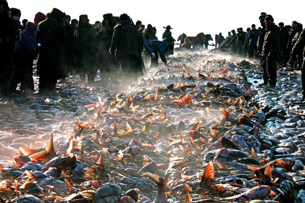

トップに戻る
所要時間：10分
松原市の無形文化遺産
松原市の無形文化遺産はすべてモンゴル族が主に行なったり伝承しているもので、松原市のなかでも前ゴルロス県が申請地区である。そして、前ゴルロス県は、吉林省のなかでもっとも多くの無形文化遺産が国家代表リストに登録されている県である。ここから、松原市さらには吉林省の無形文化遺産において、前ゴルロス県のモンゴル族が重要な存在になっていると考えられる。
モンゴル族馬頭琴音楽は、内モンゴル自治区を申請地区として2006年の第1次国家代表リストに登録されている。前ゴルロス県は2008年の第2次代表リストに追加登録された。なお、馬頭琴伝統音楽（the traditional music of the morin khuur）は、モンゴル国の申請により、すでに2003年にユネスコの「人類の口承と無形遺産の傑作」に登録され、2008年に「人類の無形文化遺産の代表的な一覧表」に統合された。
ビデオ：馬頭琴演奏
元のビデオを表示するには、ここ をクリックしてください。
政府リーダーによる馬頭琴音楽の普及
2006年9月、前ゴルロス県成立50周年の祝賀大会において総勢1,199人で馬頭琴を同時演奏し、馬頭琴演奏で最大規模、最多人数としてギネス世界記録（ギネスブック）に登録された。またこれと同じ場で、学校での馬頭琴の普及などが評価され、前ゴルロス県は中国民族管弦楽学会によって「中国馬頭琴の郷」と認定された。この学会によって「中国馬頭琴の郷」と認定された地域は前ゴルロス県が唯一である。さらに、2008年7月には、北京オリンピックの聖火リレーが前ゴルロス県を通過するイベントにあわせて、総勢2,008人で馬頭琴を同時演奏し、ギネス世界記録を塗り替えた。
冬漁習俗
ツァガーンノール（査乾湖）は前ゴルロス県北西部にある湖で、モンゴル語で「白い湖」や「聖なる湖」を意味する。モンゴル族は、冬季に氷結したこの湖の湖面で、儀礼をともなう集団漁労を営む。これがツァガーンノール冬漁習俗（中国語では「冬捕習俗」）として2008 年に代表リストに登録された。この無形文化遺産の申請地区は前ゴルロス県のみである。

元のビデオを表示するには、ここ